Apache NetBeans
Apache NetBeansJava EE Application Client on top of the NetBeans Platform Tutorial
Draft
This is document currently has draft status
This tutorial will show you how easy is to create an application client on top of the NetBeans Platform. It will be demonstrated on the example of Database Reader.
Table of Contents
Requirements
-
NetBeans IDE 5.5.1 or later
-
NetBeans Platform 5.5.1 or later
-
GlassFish v2 or later
Installation And Configuration
Install all of the required products (installation guides are available on the product’s websites). When it’ll be done we have to set up a few things. First of all please start NetBeans IDE 5.5.1 and register GlassFish v2. Right click on the Servers node in the Runtime tab and select Add server (choose Sun Java Application Server).
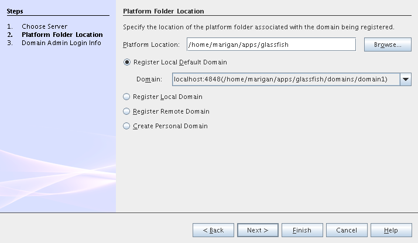
Now we need to register NetBeans Platform into IDE. It’s in fact almost same as to add a new server. In menu Tools → NetBeans Platform Manager click on a Add Platform button and pass through the wizard (as a new platform select downloaded NetBeans Platform 5.5.1).
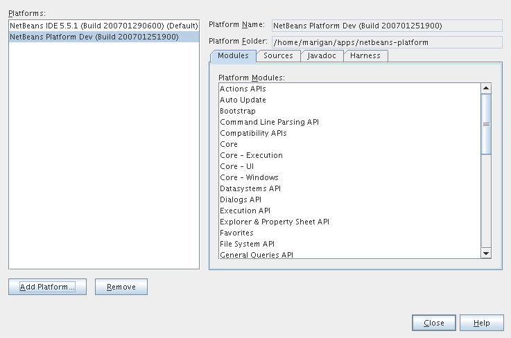
Projects Creation
It’s time to create all projects. We need NetBeans Module Suite project, NetBeans Module (added into your NetBeans Module Suite) project and Enterprise Application project with Application Client and EJB module included. Let’s do it. First of all we create NetBeans Module Suite project. Call it dbreader. As used platform choose the new one what you registered before.

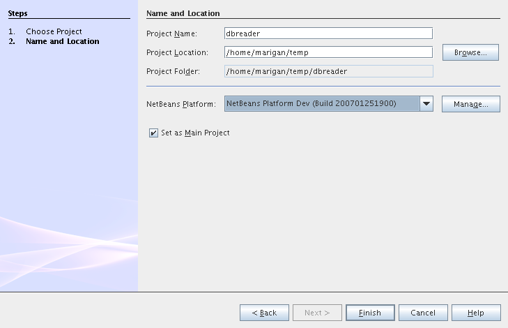
Then create NetBeans Module Project. Call it customers. And check that you want to add it into your dbreader suite. All other options leave as default.
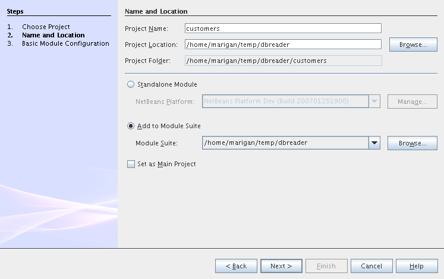
Actually we have had NetBeans Modules created and now we have to create Java EE part. So let’s create an Enterprise Application with Application Client and EJB module. Call it dbreader-ear. Include Application Client and EJB module. Exclude Web module. Also select Java EE 5 version and choose Sun Java Application Server as development server.

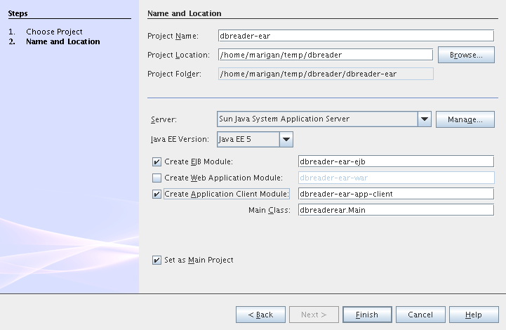
Great ! You have successfully created all required projects. Now you should see something like this in Projects tab.

Enterprise Application Development
Build Script Modifying (5.5.x)
We need to modify dbreader-ear build.xml script because the dbreader suite jnlp distro has to be packed into dbreader ear. Due to add these lines into dbreader-ear build.xml (instructions for 6.x are in the next part).
<property name="dbreader.home" value="../"/>
<target name="build-dbreader-jnlp">
<java classname="org.apache.tools.ant.Main" dir="${dbreader.home}" failonerror="true" fork="true">
<jvmarg value="-Dant.home=${ant.home}"/>
<arg value="build-jnlp"/>
<classpath path="${java.class.path}"/>
</java>
</target>
<target name="pre-dist" depends="build-dbreader-jnlp">
<!-- dbreader.home must point to DatabaseReader Application home directory -->
<mkdir dir="${build.dir}/lib"/>
<copy todir="${build.dir}/lib">
<fileset dir="${dbreader.home}/build/jnlp/app" includes="*.jar" />
<fileset dir="${dbreader.home}/build/jnlp/branding" includes="*.jar" />
<fileset dir="${dbreader.home}/build/jnlp/netbeans" includes="*.jar" />
</copy>
</target>You are able to access build.xml file in Files view.
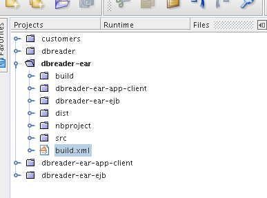
After editing you should see something like this.

Build Script Modifying (6.x)
<property name="dbreader.home" value="../"/>
<target name="build-dbreader-jnlp">
<java classname="org.apache.tools.ant.Main" dir="${dbreader.home}" failonerror="true" fork="true">
<jvmarg value="-Dant.home=${ant.home}"/>
<arg value="build-jnlp"/>
<classpath path="${java.class.path}"/>
</java>
</target>
<target name="pre-dist" depends="build-dbreader-jnlp">
<!-- dbreader.home must point to DatabaseReader Application home directory -->
<mkdir dir="${build.dir}/lib"/>
<copy todir="${build.dir}/lib">
<flattenmapper/>
<fileset dir="${dbreader.home}/build/jnlp/app" includes="**/*.jar" />
<fileset dir="${dbreader.home}/build/jnlp/branding" includes="**/*.jar" />
<fileset dir="${dbreader.home}/build/jnlp/netbeans" includes="**/*.jar" />
</copy>
</target>If you’re not using Mac then also don’t forget to exclude "Apple Application Menu" module (module suite project properties → libraries → PlatformX). Also make sure you’re including only modules from platformX cluster.
Generating Entity Classes From Database
We have dbreader-ear project infrastructure prepared. Now we have to generate entity classes from sample database. Right click on dbreader-ear-ejb project in Project tab and select New → Entity Classes From Database. In wizard chose as datasource jdbc/sample datasource and select CUSTOMER table.

On the next wizard panel type package for entity classes. Type db. Then Click on create persistence unit. Persistence unit dialog will appear. Click on Create. Now finish the wizard by clicking on the Finish button.

Now we have generated entity classes from jdbc/sample database. Under dbreader-ear-ejb project you can see generated classes.

Create Session Bean
We need to create stateless session bean with remote interface to communicate with persistence unit. Create one and call it DataBean.

When you have session bean created add business method called getData. You are able to do it by right clicking on the editor pane (in DataBean.java file opened) and select EJB Methods → Add Business Method. Pass through the wizard and create getData method which returns <pre>java.util.List</pre>.

Now use entity manager. Once again do a right click on the editor pane and select Persistence → Use Entity Manager. Entity manager code is generated. Now implement getData method.
public List getData() {
//TODO implement getData
return em.createQuery("SELECT c FROM Customer c").getResultList();
}After that you should see in editor (in DataBean.java file) something like this.
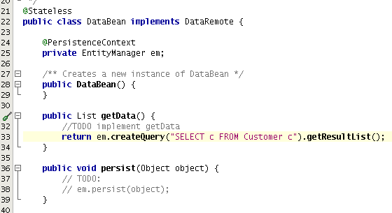
Modify Application Client
We prepared EJB module and now we have to implement functionality into dbreader-ear-app-client Application Client module. Open Main.java file in dbreader-ear-app-client project.
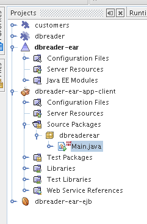
Now call your session bean DataBean. Right click on editor pane and select Enterprise Resources → Call Enterprise Bean. In the dialog select your DataBean and click OK.

Now we need to implement main method and create getCustomers method. Before that add <dbreader_project_home>/build/jnlp/netbeans/boot.jar (or <dbreader_project_home>/build/jnlp/netbeans/org-netbeans-bootstrap/boot.jar in case of NetBeans 6.1) file on classpath. Do it by right clicking on dbreader-ear-app-client project and select Properties. There select Libraries and then click on Add JAR/Folder and in open file dialog select boot.jar file. Don’t forget to uncheck the checkbox. We do not want to package this file with dbreader-ear-app-client module. Actually you have to run build-jnlp target on dbreader suite. Before that please perform step Set Up Suite. Then you can right click on dbreader project and select Build JNLP Application.
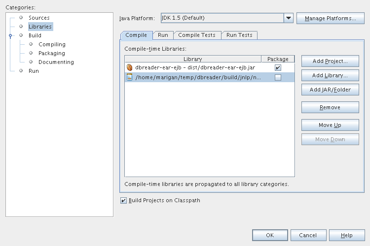
Implement main method by this code.
public static void main(String[] args) {
try {
String userDir = System.getProperty("user.home") + File.separator + ".dbreader";
org.netbeans.Main.main(new String[] {"--branding", "dbreader", "--userdir", userDir});
} catch (Exception ex) {
ex.printStackTrace();
}
}Now create getCustomers static method.
public static List getCustomers() {
return dataBean.getData();
}After doing this you should see something like this in editor pane.

Great ! We have finished development of the dbreader-ear Enterprise Application. Let’s go to develop NetBeans Modules.
NetBeans Modules Development
Set Up Suite
Now we set up the dbreader NetBeans module suite. We have to set it as standalone application and also we are able to change splash screen. Right click on dbreader project and select Properties. There select Application and then click on the Create Standalone Application.

Also you are able to set up your own splash screen. Do it by same way and under the Application node in project Properties click on Splash Screen.
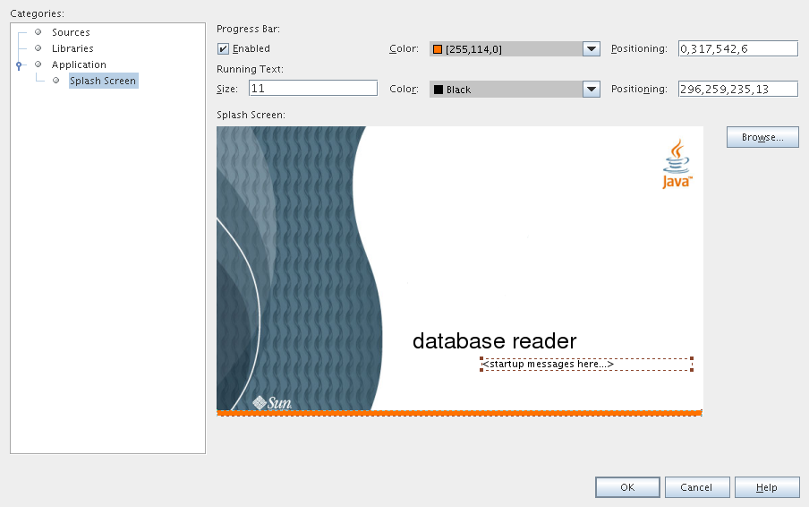
Set Up Module
Now we set up the customers NetBeans Module. We have to add dbreader-ear-ejb.jar, dbreader-ear-app-client.jar and javaee.jar on compile classpath. First of all set sources level of the module to 1.5. Right click on customers project and on the first panel select 1.5 for sources level.

Open project.properties file from project tab.
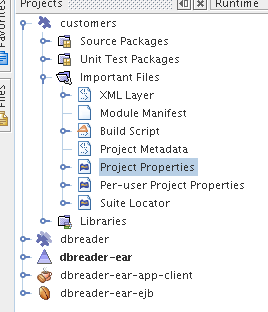
Add this code into project.properties file. Of course use your own path to dbreader and glassfish.
cp.extra=\
/home/marigan/temp/dbreader/dbreader-ear/dbreader-ear-ejb/dist/dbreader-ear-ejb.jar:\
/home/marigan/temp/dbreader/dbreader-ear/dbreader-ear-app-client/dist/dbreader-ear-app-client.jar:\
/home/marigan/apps/glassfish/lib/javaee.jarAfter that you should see something like this in editor pane.
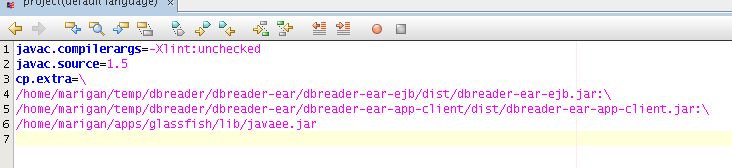
Create Window Component
Now we create a new window component which will serve as viewer for database data. Right click on customers project and select New → Window Component. On the first wizard panel choose editor as Window Position and select Open on Application Start.
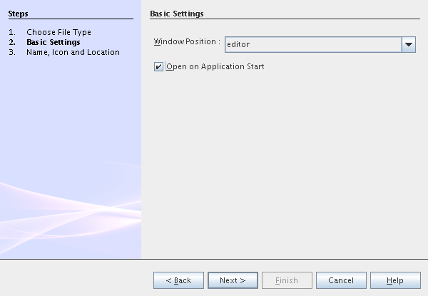
On the second panel specify component Class Name Prefix (use Customers) and finish the wizard.
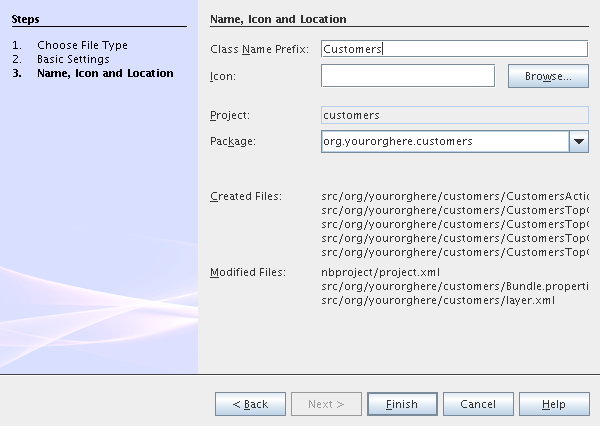
After that you should see this in Project tab.

Write Customers Top Component Logic
We have to write application logic for customers top component. Open CustomersTopComponent.java file in design mode and drag and drop a jTable component from palette into it.

Now switch into source view and modify constructor and add initData method.
private CustomersTopComponent() {
initComponents();
setName(NbBundle.getMessage(CustomersTopComponent.class, "CTL_CustomersTopComponent"));
setToolTipText(NbBundle.getMessage(CustomersTopComponent.class, "HINT_CustomersTopComponent"));
// setIcon(Utilities.loadImage(ICON_PATH, true));
initData();
}
private void initData() {
List<Customer> data = Main.getCustomers();
Object[][] rows = new Object[data.size()][3];
int i = 0;
for (Customer c : data) {
rows[i][0] = c.getName();
rows[i][1] = c.getEmail();
rows[i++][2] = c.getPhone();
}
Object[] colums = {"Name", "E-mail", "Phone"};
jTable1.setModel(new DefaultTableModel(rows, colums));
}After that you should see something like this.
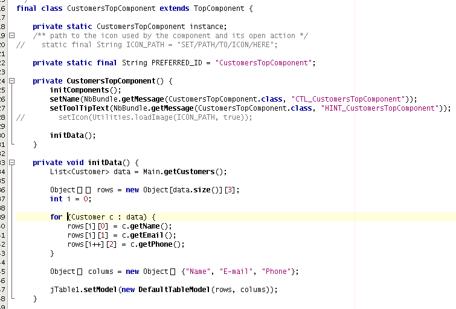
Run Application
Great job !! Everything is done. Now you can run your application. Right click on dbreader-ear project and select Run Project. Wait a minute do build and glassfish to start. Enjoy your application :o)
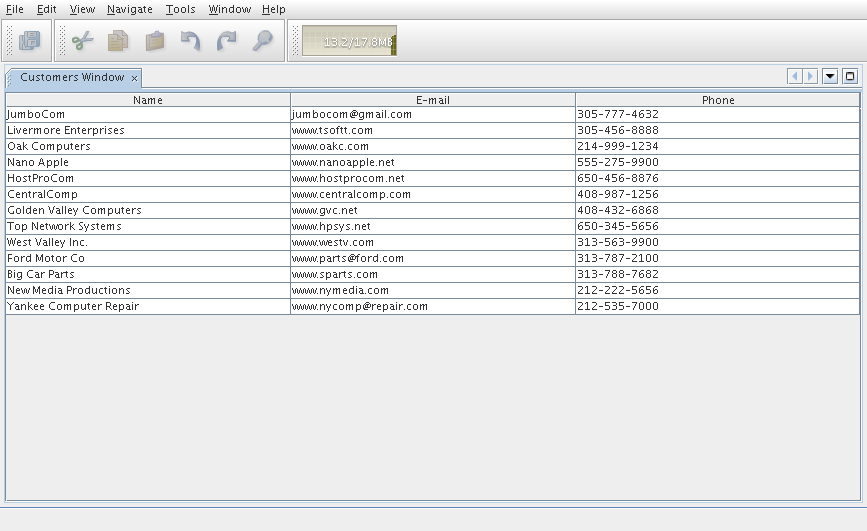
Debug Application
There of course comes a time when you need to debug your application. Debugging the server side is relatively easy: start Glassfish in Debug mode and simply "Attach" to it ('Attach Debugger…' from the 'Run' menu).
Debugging the client side is a little harder. On NetBeans 6.1, simply right-clicking on the EAR project and select "Debug" doesn’t seem to work. It fails with error messages saying that your classes from your other modules are not found on the classpath. Manually referring to them isn’t sufficient either, because once you’ve done that the Ant debug script will complain about not finding classes belonging to the Platform modules you depend on.
The simple solution is to add the following 2 Ant targets to your build.xml :
<target name="Debug platform (Attach-debug)" description="Debug the platform, need to attach the debugger once the JVM is started"
depends="-debug-init-jvm,run"/>
<target name="-debug-init-jvm">
<property name="j2ee.appclient.jvmoptions.param" value="-agentlib:jdwp=transport=dt_socket,server=y,address=9009"/>
</target>To run the "Debug platform (Attach-debug) target, right-click on the 'build.xml' file in the "Files" (can’t see it from the "Project") view and select it from the "Run target" menu item. Once the JVM is started (the console stops scrolling but the program is still running), attach to the JVM just like when debugging the server.
The idea is to call the already-existing "run" target, but specify arguments to be passed to the JVM when its launched. The above arguments will launch the JVM in debug mode, asking it to wait for a connection (default behavior) and the address will be 9009. You could even specify a different port number if you want to run Glassfish in debug mode at the same time (note that the debugger can only attach to one JVM at a time, so you have to detach from the client and then attach to the server).
For more details about the JPDA debugging arguments, see here.